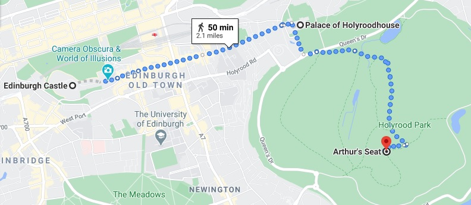

How to get to Arthur’s Seat?
Arthur’s Seat is located in Holyrood Park at the end of Edinburgh’s Royal Mile.
This makes it very easy to get to, wherever you are staying in the city. There are multiple routes around the park, but perhaps the best way to climb Arthur’s Seat is to follow a circular walking route that begins and ends at the Palace of Holyroodhouse and the Scottish Parliament building. Alternatively, for a faster route to the summit, you can start from Dunsapie Loch on the south-eastern side of the park. Here, there is a small car park and a steep but shorter route to the top of Arthur’s Seat.